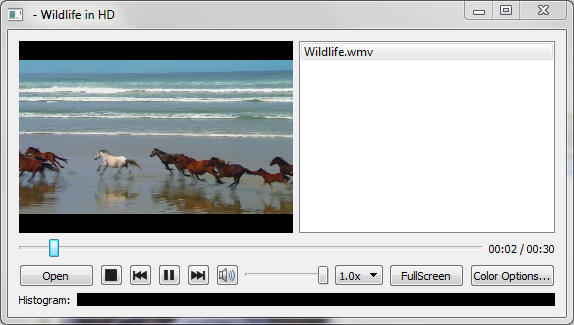

Media Player Example
Playing audio and video.

Media Player demonstrates a simple multimedia player that can play audio and or video files using various codecs.
Running the Example
To run the example from Qt Creator, open the Welcome mode and select the example from Examples. For more information, visit Building and Running an Example.
The example uses a QMediaPlayer object passed into a QVideoWidget to control the video output. To give the application playlist capability we also use a QPlayList object.
To activate the various functions such as play and stop on the dialog, the button clicked events emit the play() and stop() signals, which are connected to the play() and stop() slots of QMediaPlayer.
connect(controls, SIGNAL(play()), player, SLOT(play())); connect(controls, SIGNAL(pause()), player, SLOT(pause())); connect(controls, SIGNAL(stop()), player, SLOT(stop()));
We can get the volume (and set our user interface representation)
controls->setVolume(player->volume());
and we can make widget 'volume' changes change the volume
connect(controls, SIGNAL(changeVolume(int)), player, SLOT(setVolume(int)));
The example also allows us to change various video properties by means of the QVideoWidget object. We can go to Full Screen mode with a single button click, and back again. Or if we press the "Color Options" dialog button we can have access to more subtle influences. The dialog has a set of sliders so that we can change the brightness, contrast, hue and saturation of the video being watched. The connect() statements are in pairs so that changes to either the user interface widget (the relevant slider) or the QVideoWidget object will update the other object.
connect(brightnessSlider, SIGNAL(sliderMoved(int)), videoWidget, SLOT(setBrightness(int))); connect(videoWidget, SIGNAL(brightnessChanged(int)), brightnessSlider, SLOT(setValue(int))); connect(contrastSlider, SIGNAL(sliderMoved(int)), videoWidget, SLOT(setContrast(int))); connect(videoWidget, SIGNAL(contrastChanged(int)), contrastSlider, SLOT(setValue(int))); connect(hueSlider, SIGNAL(sliderMoved(int)), videoWidget, SLOT(setHue(int))); connect(videoWidget, SIGNAL(hueChanged(int)), hueSlider, SLOT(setValue(int))); connect(saturationSlider, SIGNAL(sliderMoved(int)), videoWidget, SLOT(setSaturation(int))); connect(videoWidget, SIGNAL(saturationChanged(int)), saturationSlider, SLOT(setValue(int)));